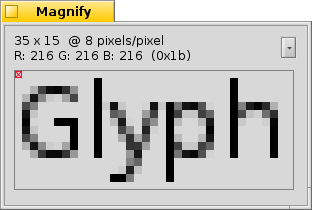

Aparença
| Barra d'eines: | ||
| Ubicació: | /boot/system/preferences/Appearance | |
| Preferències: | ~/config/settings/system/app_server/appearance ~/config/settings/system/app_server/decorator_settings ~/config/settings/system/app_server/fonts |
Les preferències de l'Aparença us permeten canviar els aspectes visuals del Haiku.
 Tipus de lletra
Tipus de lletra

Haiku fa servir tres tipus de lletra diferents per a diferents casos. Podeu triar els tipus de lletra normal, negreta i d'amplada fixa i les mides que el sistema farà servir. A més, també podeu triar la lletra que es farà servir al menús.
Instal·lació de nous tipus de lletra
Per tal d'instal·lar els nous tipus de lletra, que no venen com un paquet .hpkg corrent, els heu de copiar a una subcarpeta segons el tipus de lletra (psfonts or ttfonts) dintre de les respectives carpetes non-packaged (veieu l'apartat Sistema d'arxius).
| /boot/system/non-packaged/data/fonts/ttfonts/ | pels tipus de lletra disponibles per a tots els usuaris. | |
| /boot/home/config/non-packaged/data/fonts/ttfonts/ | pels tipus de lletra només disponibles per vos. |
Colors

A la pestanya , podeu canviar el colors de les diferent parts de la interfície d'usuari. Podeu canviar el color arrossegant i enganxant des d'altres programes, el que permet arrossegar colors des de, per exemple Pinzell Màgic, Icon-O-Matic o del tauler Fons.
Decoració de les finestres

La decoració determina l'aspecte de les finestres i tots els elements de la interfície. Ara per ara Haiku vé amb només una decoració. Si trobeu i instal·leu altres decoracions, podeu triar-ne altres des del menú desplegable.
Haiku's default decorator lets you set the arrow style of the scroll bar: either single arrows at the end of scrollbars to conserve a bit of space, or double arrows — the traditional BeOS way — potentially saving some mouse moving when scrolling up and down or left and right...
Suavitzat

La pestanya ofereix alguns ajustaments sobre la visualització a la pantalla.
Consigna de glifs
Podeu alinear totes les lletres de forma que totes les línies verticals i horitzontals estiguin justament sobre dos píxels, activant l'opció . El resultat és un contrast perfecte, especialment quan es tracta de negre sobre blanc. El text apareix més nítid. L'opció és especialment útil amb els dispositius de baixa resolució, com ara els netbooks. Activant hinting els tipus de lletra petits poden tenir força mal aspecte, però aquesta opció permet utilitzar el hinting per als editors i el terminal amb millors resultats.
Podeu veure la diferència en utilitzar la consigna en aquestes captures ampliades:
 Consigna: desactivat |  Consigna: activat |
Cal indicar que totes les finestres de la Lupa d'aquesta pàgina, estàn, por suposat, renderitzades amb les opcions respectives. Per tan, obteniu el resultat real de les opcions comparant, per exemple, el títol de la pestanya groga en negreta o el text "33 x 15 @ 8 pixels/pixel".
Tipus de suavitzat
Una altre tècnica per millorar el renderitzat és el Suavitzat, que es aplicable a tots els gràfics vectorials i també al text. Fa més clares les línies canviant el color d'alguns píxels. Hi ha dos mètodes per fer-ho:
canvia la intensitat dels píxels de les vores.
ho fa encara millor, especialment amb monitors LCD (d'alta resolució). Canvia el color en lloc de la intensitat, el que fa moure la vora una fracció de píxel, ja que les pantalles LCD mostren cada píxel amb un component vermell, verd i blau.
Veieu els dos mètodes en captures també ampliades:
Escala de grisos, amb Consigna: desactivada | Subpíxel LCD, amb Consigna: activada |
El suavitat basat en subpíxels afegeix una lleugera brillantor al color dels objectes. Pot no agradar a tothom. A Haiku podeu barrejar els dos mètodes de suavitzat i trobar l'ajustament correcte amb mitjançant una barra lliscant.
Si s'activa la consigna i també el suavitzat de subpíxels LCD canviant el codi font i es torna a compilar, el que s'obté comparat amb la consigna d'escala de grisos és el següent:
EScala de grisos, amb Consigna: activada | Subpíxel LCD, amb Consigna: activada |
A la part inferior del tauler hi ha dos botons:
| Reinicia tot als valors per omissió. | ||
| restaura les opcions que eren actives en iniciar les preferències de l'Aparença. |